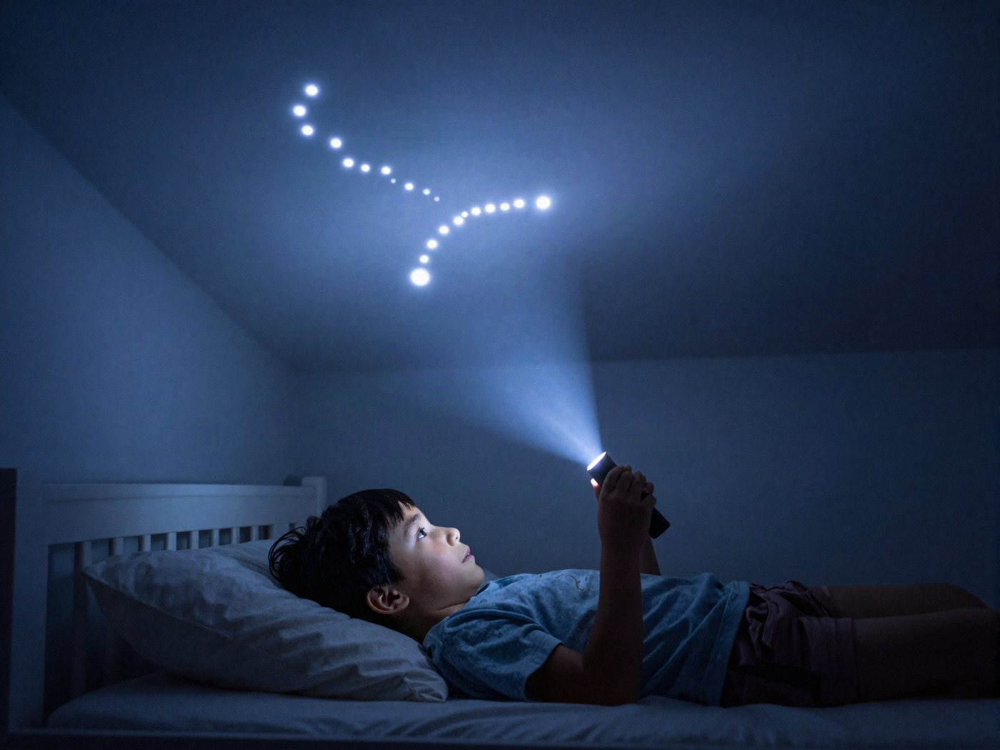

전체 단원 › 실험·활동 › 5~6학년 과학
휴지심 별자리 투영기

휴지심과 손전등으로 우리 방 천장에 북두칠성을 띄워요. 밤하늘에서 북극성을 찾는 법도 함께 배워요.
30분 · 난이도 ★★☆ 보통
준비물
- 휴지심 3개 — 다 쓴 두루마리 휴지 심
- 검은 종이 — 검은 도화지. 없으면 이면지를 매직으로 검게 칠해요.
- 고무줄 3개 — 종이를 고정하는 용도
- 압정 1개 — 굵은 바늘도 돼요. 아래에 접은 수건을 깔아요.
- 손전등 — 휴대폰 손전등도 돼요
- 별자리 도안 — 아래에서 내려받아 인쇄해요
만드는 방법
- 도안 오리기
도안을 인쇄해 별자리 동그라미를 바깥 점선을 따라 오려요. - 별 구멍 뚫기
검은 종이 위에 도안을 겹쳐 대고, 접은 수건 위에서 흰 점마다 압정으로 구멍을 뚫어요. 밝은 별은 압정을 살짝 돌려 조금 더 크게 뚫어요. - 휴지심에 씌우기
구멍 뚫린 검은 종이를 휴지심 한쪽 끝에 씌우고 고무줄로 팽팽하게 고정해요. 휴지심 옆면에 별자리 이름을 적어 둬요. - 천장에 띄우기
방을 어둡게 하고, 휴지심 반대쪽 끝에 손전등을 대고 천장을 비춰요. 휴지심을 천장에 가까이, 멀리 해 보며 별이 또렷해지는 거리를 찾아요. 맨 위 사진처럼요!
관찰해 봐요
- 휴지심을 천장에서 멀리 하면 별자리 크기는 어떻게 되나요?
- 북두칠성 국자 끝의 두 별을 이은 길이를 다섯 배 늘리면 어디에 닿을까요?
- 카시오페이아와 북두칠성은 어느 별을 사이에 두고 마주 보고 있을까요?
왜 그럴까?
손전등 빛은 검은 종이에 막히고, 작은 구멍으로만 빠져나가요. 빛은 똑바로 나아가니까 구멍 모양 그대로 천장에 점이 찍혀요. 진짜 별들도 아주아주 멀리 있어서 밤하늘에 작은 점처럼 보여요.